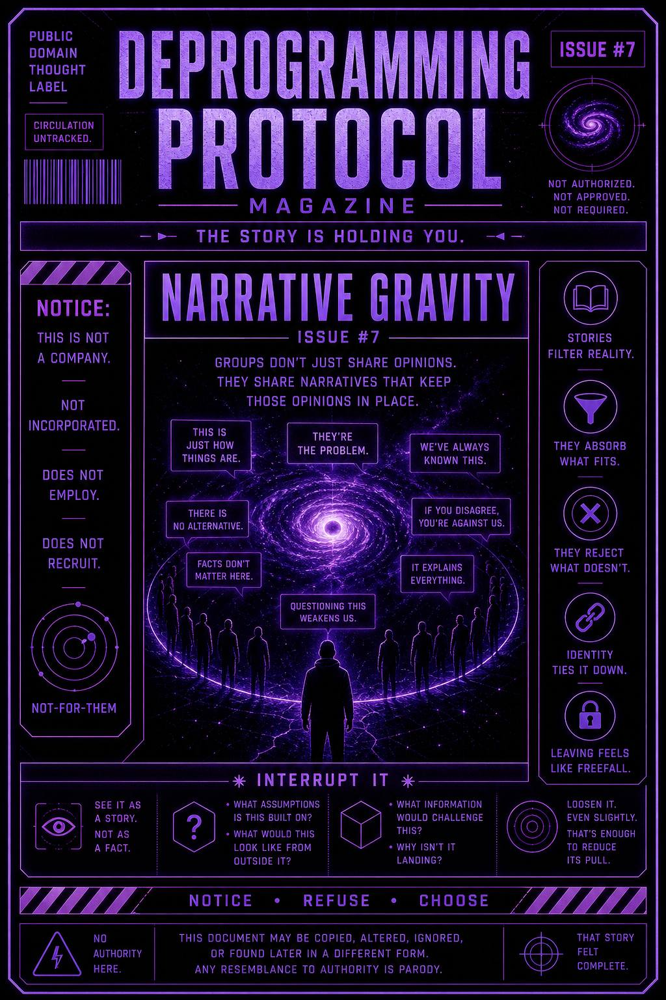

It’s not just roles that hold you.
It’s the story underneath them.
Groups don’t just share opinions.
They share narratives that keep those opinions in place.
This issue exists to expose how large-scale stories stabilize behavior across entire groups.
It teaches you to notice when:
…and how narratives create invisible boundaries.
A narrative forms over time.
Not all at once.
Layer by layer:
Eventually it becomes:
“This is just how things are.”
Now everything gets filtered through it.
New information doesn’t stand alone.
It gets absorbed or rejected based on fit.
If it fits, it strengthens the story.
If it doesn’t, it gets explained away.
The narrative stays intact.
People inside it feel:
But also…
Leaving the narrative doesn’t feel like adjusting.
It feels like losing the ground beneath you.
You don’t have to destroy the story.
You just have to see it as a story.
Notice when something feels:
“This is obviously true.”
“This explains everything.”
That’s the moment.
Pause.
Yeah. You.
Still reading.
Still not jumping in.
Good.
Ask:
Don’t rush to replace the story.
Just loosen it.
Even slightly.
That’s enough to reduce its pull.
This publication does not provide replacement narratives.
No new story is required.
No unified explanation is offered.
Any system that explains everything
should be held lightly.